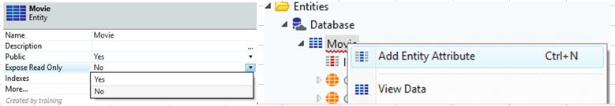

①MovieエンティティとPersonエンティティの作成
（OutSystemsのエンティティについて）
名前、ID（識別子）アトリビュートに加えて、他のアトリビュートが1つ以上必要
Excelのスプレッドシートを使って初期設定
この処理を「ブートストラップ」と呼ぶ。
このアプリについて
2つのモジュールがあり、UIモジュールはこれらのエンティティを参照するため、これらのエンティティをPublicとして定義
それではOSMDb_CoreモジュールにMovieエンティティを作成から開始する。
-
Movieエンティティの設定内容は以下の通り
name データ型 必須設定 最大文字入力数 Title Text 〇 Year Integer 〇 PlotSummary Text 500 GrossTakingsAmount Currency IsAvailableOnDVD Boolean エンティティは［Public］に設定
書き込み権限ありで公開する必要があり- ワークスペースの右上にある［Data］タブをクリックして、Data要素に切り替え
- ［Elements］領域でEntitiesフォルダを右クリックし、［Add Entity］を選択
- エンティティの名前に「Movie」と入力
- • Movieエンティティを展開し、自動採番のIdアトリビュートに加えて、
CRUD（作成、読み取り、更新、削除）機能を担う6個のEntityアクションがあるが、
このエンティティはUIモジュールで使用するために右下のプロパティエディタでPublicプロパティを［Yes］に変更 - 引き続きエンティティのプロパティでExpose Readonlyを［No］に設定して、
エンティティを書き込み権限ありで公開する - Movieエンティティを右クリックし、［Add Entity Attribute］を選択 
- アトリビュートの名前に「Title」と入力します。するとエラーが消える
- Is Mandatoryプロパティを［Yes］に変更
- Movieエンティティを右クリックし、［Add Entity Attribute］を選択
下記内容を設定する。
アトリビュート名はYear
デフォルトのデータ型がIntegerをMandatory - Movieエンティティを右クリックして、［Add Entity Attribute］を選択
下記内容を設定する。
アトリビュート名はPlotSummary
デフォルトのデータ型がText
Length（長さ）50文字を500に変更 - 更に下記2つのAttributeを新規追加
GrossTakingsAmount - Currency
IsAvailableOnDVD - Boolean -
GrossTakingsAmountアトリビュートを選択し、そのLabelプロパティを「Gross Takings」に変更
(効果)OutSystemsで使用されるデフォルトのラベルがUI生成時に短縮化
※これについては後の演習で扱う - Movieエンティティは以下のようになる。
（モジュールにエラーがある時の確認方法）
エンティティに赤下線が引かれ、［TrueChange］タブに赤いX印が付いている
エンティティは1つの自動採番アトリビュートでは不成立である。
補足
OutSystemsは、アトリビュート or 変数名からデータ型を推論。
GrossTakinsAmountは名前に「Amount」と付いているため、
OutSystemsはCurrencyアトリビュートであると自動推定。
IsAvailableOnDVDも同様に、アトリビュート名が「Is」で始まっていることから、Booleanであると推定
-
- 新規Personエンティティの作成
Personエンティティのに含めるアトリビュート設定内容は以下の通り
アトリビュート名 データ型 必須設定 Name Text 〇 Surname Text 〇 DateOfBirth Date 〇 DateOfDeath Date エンティティを［Public］に設定
書き込み権限ありで公開
エンティティの複数形のラベルを「People」に変更
- ［Data］タブで新規のエンティティを作成し、その名前を「Person」に設定
- 右下のプロパティエディタで以下に変更設定
Publicプロパティを［Yes］
Expose Readonly を［No］ - 下記各アトリビュートをエンティティに追加
- Name
- Surname
- DateOfBirth
- DateOfDeath
※Service Studioは、アトリビュート名からデータ型を正確に推定可能か？
→必ず再確認を行うようにすること。 - 下記アトリビュートを必須に設定
- Name
- Surname
- DateOfBirth
- Personエンティティは以下のようになる
- Personエンティティを選択し、プロパティエディタでMore…プロパティをダブルクリックして、エンティティエディタを起動
- エンティティエディタのダイアログで［More Options］セクションを展開し、
Label (plural)プロパティを「People」に変更
［Close］ボタンをクリック
(備考)エンティティエディタで可能なこと何？
画面の作成時にUIのデフォルトとして使用するラベルなど、エンティティに関する高度な設定を行うことができる。
ここではPerson」というエンティティ名の正しい複数形表現の設定のみを行う
(多くの英単語とは違い、末尾に「s」を付けても複数形にはならないため）
➡複数のPersonインスタンスに関わるモジュール要素やオペレーション
（どんな時に使う？）Service Studioがデフォルト名を提示する必要がある場合
(効果)文法的な正確さを求める場合に、後から手動調整する手間も省略可能
- 新規作成した2つのエンティティに、2つのExcelファイルから複数のシードデータをブートストラップ
この作業には、Resourceフォルダにある下記2つのExcelファイルを使用する。- Movies.xlsx
- People.xlsx
- Movieエンティティを右クリックして［Advanced］を選択し、
［Create Action to Bootstrap Data from Excel…］オプションを選択
- Resourcesフォルダを参照し、Movies.xlsx Excelファイルを選択
- Create Action to Bootstrap Data from Excel］ウィンドウ上の確認
(確認項目)Movies.xlsx Excelファイルの列ヘッダー名（Excelの列）が
Movieエンティティのアトリビュート名（Movie Attributes）と一致しているか
(一 致)［Proceed］ボタンをクリック
(不一致)［Cancel］ボタンをクリック
不一致の生じているMovieエンティティのアトリビュートの名前またはデータ型を修正
手順3をやり直し
（注意事項)エンティティのアトリビュートの名前および型は、Excelファイルの内容と一致している必要がある
(備考)
前手順完了すると、画面に星印（要素が作成された領域を示すもの）が表示される。
Excelファイルからデータ取得し、DB追加するロジックは、
［Logic］タブのBootstrapMoviesアクション(役割は現在Moviesが存在するかどうかを確認)で作成(未存在時の対応)
ExcelのスプレッドシートからMoviesをインポートし、DB内のスプレッドシートの各行にMovieを作成
Excelファイルはモジュール内に保存される
(保存先)［Data］タブのResourcesフォルダ
（このアクションの実行タイミング）モジュールがパブリッシュされた時
- Personエンティティについても、People.xlsx Excelファイルを選択して同じプロセスを実行
Excelの列値とPersonアトリビュートの値が一致していることを必ず確認
［Proceed］をクリック
- 新規Personエンティティの作成
- エンティティを作成したので、2つのstaticエンティティ（MovieGenreとPersonRole）を作成
- Label
- Order
- Is_Active
- Service Studioで［Data］タブに切り替え
- ［Elements］領域でEntitiesフォルダを右クリックし、［Add Static Entity］を選択
- staticエンティティの名前に「MovieGenre」と入力
- 展開記号をクリックしてMovieGenreエンティティを展開

(備考)staticエンティティについて
1つのエンティティアクション（Get）のみが含まれる
実行時に動的に作成 or 更新することは不可のため、CreateアクションとDeleteアクションは未存在
- このstaticエンティティはUIモジュールで使用するため、Publicプロパティを［Yes］に変更
- MovieGenreエンティティを右クリックし、［Add Entity Attribute］を選択
- 名前を「MinimumAge」に設定し、データ型をIntegerに変更
- MovieGenrestaticエンティティを右クリックし、［Add Record］を選択
- レコードの識別子に「Comedy」と入力
- (プロパティエディタ)このレコードのMinimumAgeアトリビュートの値を「6」に設定
- 更に下記3つのレコードを追加し、これらのMinimumAgeをそれぞれにに設定
これらのレコードのMinimumAgeをそれぞれに設定- Action / 12
- Drama / 16
- Horror / 18
- Director（監督）
- Producer（プロデューサ）
- Actor （俳優）
- Crew （スタッフ）
- staticエンティティを作成し、名前を「PersonRole」に設定
- 右下のプロパティエディタで、Publicプロパティを［Yes］に変更
- • staticエンティティに下記4つのレコードを追加
- Director
- Producer
- Actor
- Crew
- staticエンティティは以下のようになる

- 緑色［1-Click Publish］ボタンをクリックして、モジュールをパブリッシュ
- (メッセージ確認)モジュールが正常にパブリッシュされたかどうかを、
OSMDbモジュールが古くなっていることを示す
これは次の演習で扱う - (数秒後に行う確認事項)
Movieエンティティ or Personエンティティを右クリックし、
［View Data］を選択して、データが適切にプレビュー表示されること

②staticエンティティ（MovieGenreおよびPersonRole）を作成
作成したstaticエンティティについて
初期状態で下記少数のアトリビュートが含まれているが、その他のアトリビュートを追加もOK。
(注意)通常のエンティティと異なり、staticエンティティのデータは設計時に定義と初期設定を行う
staticエンティティに使用可能な値は「レコード」と呼ばれる
- MovieGenrestaticエンティティを作成して、
様々なジャンルの映画を保存するための年齢制限に関する新規のアトリビュート（MinimumAge（Integer））を追加。
エンティティに下記４つのレコードを追加し、
それぞれのレコードに適切な年齢制限を設定後にエンティティを公開する （6、12、16、および18）
| レコード名 | 年齢制限数 (MinimumAge) |
|---|---|
| Comedy | 6 |
| Action | 12 |
| Drama | 16 |
| Horror | 18 |

PersonRolestaticエンティティを作成
（理由)•個人が映画で担当する様々な職業を表すため
今回設定する職業は下記の通り
※エンティティを公開する